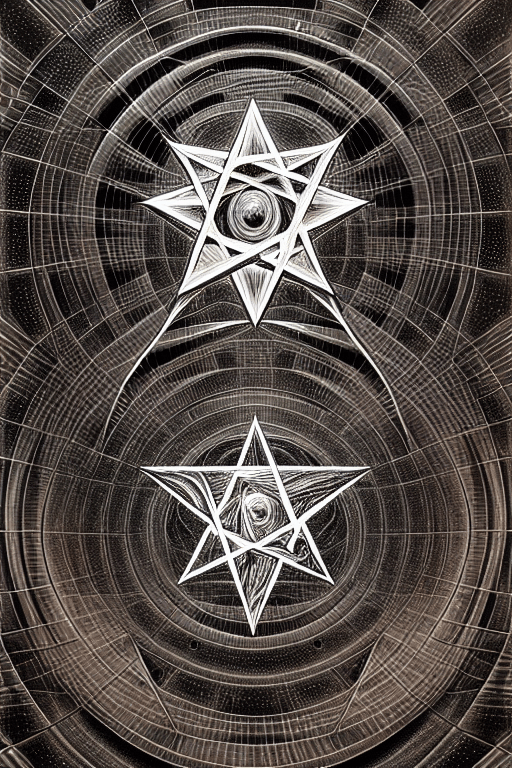
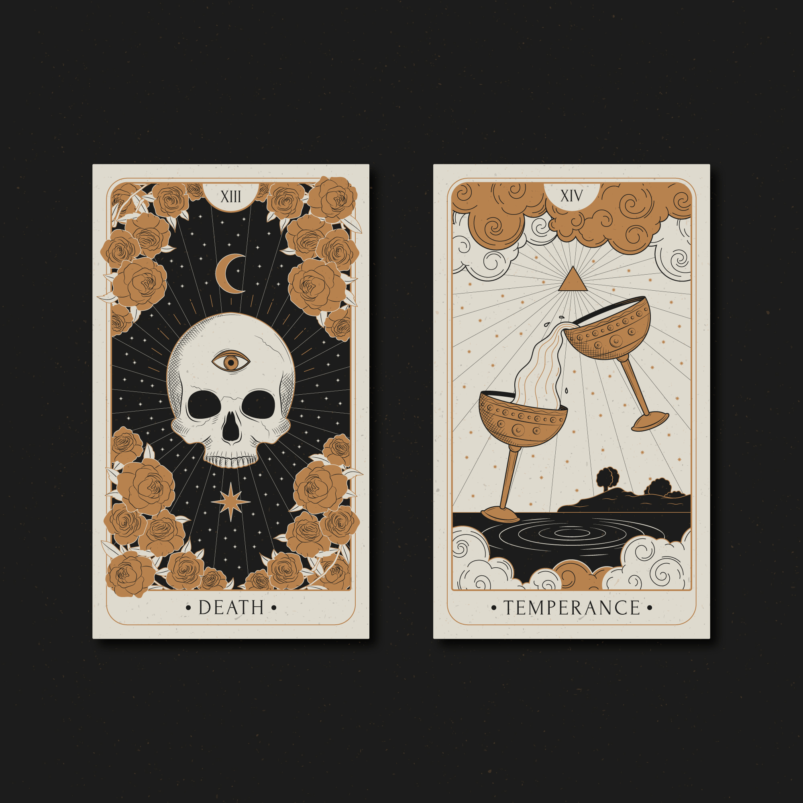

O Tabuleiro da Bruxa
Bem-vindo ao "Tabuleiro da Bruxa" - o seu portal mágico para o mundo da Wicca, magia e feitiços. Neste reino encantado, exploraremos os segredos antigos da bruxaria e as artes místicas que permeiam a tradição Wicca. Prepare-se para mergulhar em um universo de sabedoria ancestral e magia prática.
Wicca: A Tradição da Bruxaria Moderna:"A Wicca é uma tradição espiritual e mágica que tem raízes profundas na natureza e nos ciclos da Lua. Ela enfatiza o respeito pela Terra e a reverência pela Deusa e pelo Deus, representando as energias femininas e masculinas da criação. Na Wicca, a magia é vista como uma extensão natural da espiritualidade, e os praticantes trabalham em harmonia com a natureza para alcançar seus objetivos mágicos."

Magia: A Arte de Transformar a Realidade:A magia é a habilidade de manifestar sua vontade no mundo material. Na Wicca, a magia é usada para cura, proteção, adivinhação, crescimento espiritual e muito mais. Acreditamos que cada ação tem uma reação, e ao manipular energias e intenções, podemos criar mudanças positivas em nossas vidas e no mundo ao nosso redor. Nossos artigos e guias irão ajudá-lo a compreender os princípios da magia, como criar rituais eficazes e trabalhar com ferramentas mágicas.
Feitiços: Encantamentos para a Transformação: aqui você encontrará uma vasta coleção de feitiços e encantamentos para uma variedade de propósitos. Se você busca amor, prosperidade, proteção ou cura, nossos feitiços podem ser o que você precisa. Cada feitiço é acompanhado de instruções detalhadas e dicas sobre como maximizar sua eficácia. Lembramos a todos que a magia é uma responsabilidade sagrada. Ela deve ser usada para o bem e em harmonia com a vontade divina e a lei cósmica. Não usamos magia para prejudicar ou manipular os outros, mas sim para manifestar nossa verdadeira vontade e ajudar a criar um mundo mais equilibrado e harmonioso. Explore nosso site para aprender mais sobre a Wicca, a magia e como você pode incorporar essas práticas em sua própria vida. Lembre-se de que a jornada espiritual é pessoal e única para cada indivíduo, e estamos aqui para fornecer orientação e apoio em sua busca por sabedoria e iluminação. O "Tabuleiro da Bruxa" é mais do que apenas um site - é um refúgio para aqueles que buscam aprofundar seu conhecimento mágico e espiritual. Junte-se a nós nesta jornada mágica e comece a desvendar os segredos da Wicca e da magia.
Feitiços
Feitiços:Os feitiços são feitos de acordo com a necessidade do cliente podem ser vistos como uma abordagem personalizada da magia. Essa prática reconhece que cada indivíduo tem necessidades únicas e desejos específicos em suas vidas. Portanto, os feitiços são moldados de acordo com essas necessidades individuais, com o objetivo de trazer harmonia e equilíbrio.
É importante notar que, ao realizar feitiços personalizados, os praticantes devem sempre considerar as implicações éticas. A magia deve ser usada para promover o bem-estar e o crescimento, tanto para o cliente quanto para as pessoas ao seu redor. Isso implica que os feitiços não devem ser usados para prejudicar ou manipular outras pessoas de qualquer maneira.
Além disso, o consentimento é fundamental. Qualquer feitiço que envolva outras pessoas deve ser feito apenas com o conhecimento e consentimento delas. A magia ética sempre respeita os direitos e desejos dos outros.
Portanto, a criação de feitiços personalizados voltados para o bem deve ser realizada com responsabilidade, respeitando a ética e o livre arbítrio, e com uma compreensão sólida das tradições mágicas envolvidas. Sempre busque orientação de praticantes experientes e confiáveis ao explorar o mundo da magia e dos feitiços.
Contato
Converse com a bruxa:
Venha até mim: